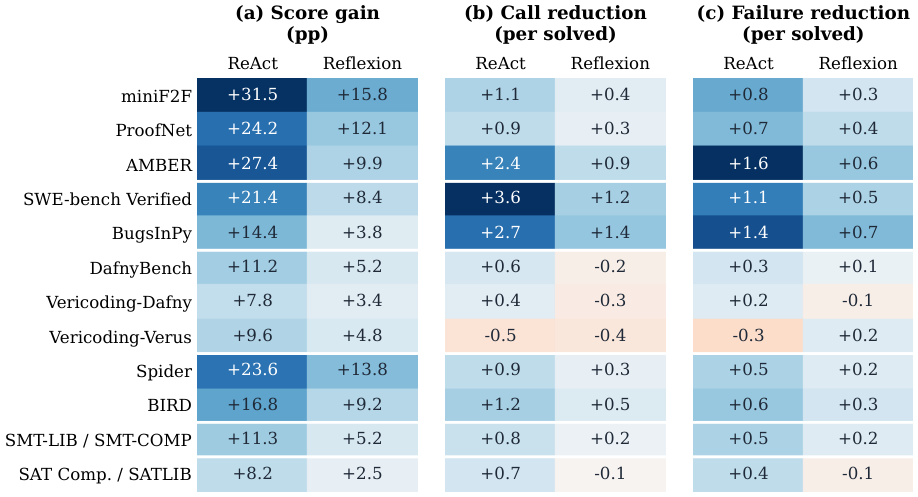

Lean serves as the executable proof checker for the mathematics domain, verifying agent-generated proofs and counterfactual corrections stored in memory.
Abstract
Existing agent memory frameworks mainly create memory through an agent's interaction with the factual world, e.g., remembering feedback from actions taken to improve performance on future tasks. However, these frameworks seldom ask the "what if" question during memory construction: what if a different action had been taken, would the feedback have changed, and how could this feedback become useful memory? Obtaining such feedback directly in an active environment can be expensive and can alter the state needed for comparison. In this work, we introduce COUNTERMEM, a reinforcement-learning framework for constructing and using verified counterfactual memory across tasks. After a failed action, COUNTERMEM evaluates local alternatives from a copy or reset of the original state using executable world models, such as tests, proof checkers, and solvers. It stores improvements with the original and corrected actions, checked outcomes, and conditions for reuse. A learned memory-use policy selects a retrieved record or skips memory to balance task success and interaction cost, while the base LLM remains fixed. Both memory and policy are frozen during held-out evaluation. We evaluate COUNTERMEM on 12 benchmark settings across six domains. With gpt-oss-120b, COUNTERMEM improves both ReAct and Reflexion on all 12 benchmarks across six domains, averaging a gain of 12.6 percentage points over their unaugmented versions. In the four-domain comparison across two backbones, task-run tokens decrease by 7.7-42.0%, excluding offline selector-training costs. Further analyses show that removing verification or persistent storage weakens the gains, while applying verified corrections to unsuitable decisions can reverse them. Code will be released upon acceptance.
Problem
Agent memory frameworks store feedback only from actions actually taken. They never check whether an alternative action would have done better. Testing alternatives in a live environment is costly and can change the state needed for comparison.
Approach
After a failed action, COUNTERMEM tests a bounded set of local alternatives from a copy or reset of the original state. It uses executable world models for this: Lean proof checks, repository tests, Dafny/Verus, SQL result checks, and SMT/SAT solvers. Verified improvements are stored as records containing the original and corrected actions, the evidence, and the conditions for reuse. A DQN selector then picks one retrieved record or skips memory, while the base LLM stays fixed.
Results
With gpt-oss-120b, COUNTERMEM improves both ReAct and Reflexion on all 12 benchmarks in six domains, by 12.6 points on average. In the four-domain comparison (Math, Coding, Text-to-SQL, SAT) across two backbones, it uses 7.7–42.0% fewer task-run tokens than the unaugmented agents. Ablations show that removing verification or persistent storage reduces the gains.

Figure 5: Adding CF Memory to each base agent on 12 benchmarks. The LLM is gpt-oss-120b. Each cell compares the augmented agent with its own unaugmented version. Positive entries mean higher scores in (a) or fewer evaluator calls and failed attempts per solved task in (b,c). Negative reductions mean additional interaction.
Augmentation
Math
Coding
Text-to-SQL
SAT
Tokens (M)
None
29.8
48.7
26.8
50.7
6.0
Best-of-N
34.5
38.1
36.2
41.1
9.4
MemGPT
27.3
39.5
48.9
47.0
5.8
CF Memory
57.5
66.6
47.0
58.9
4.4
ReAct with gpt-oss-120b (selected rows; domain scores and task-run tokens)